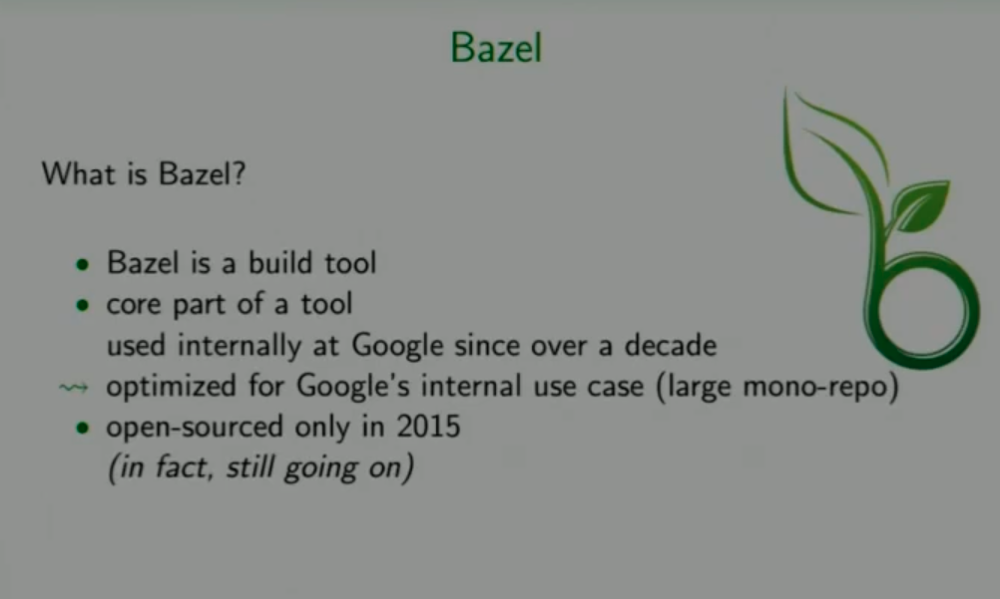
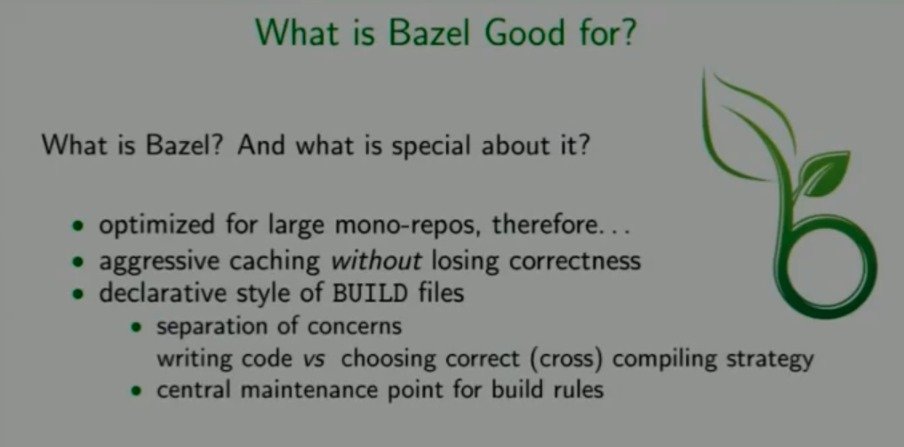
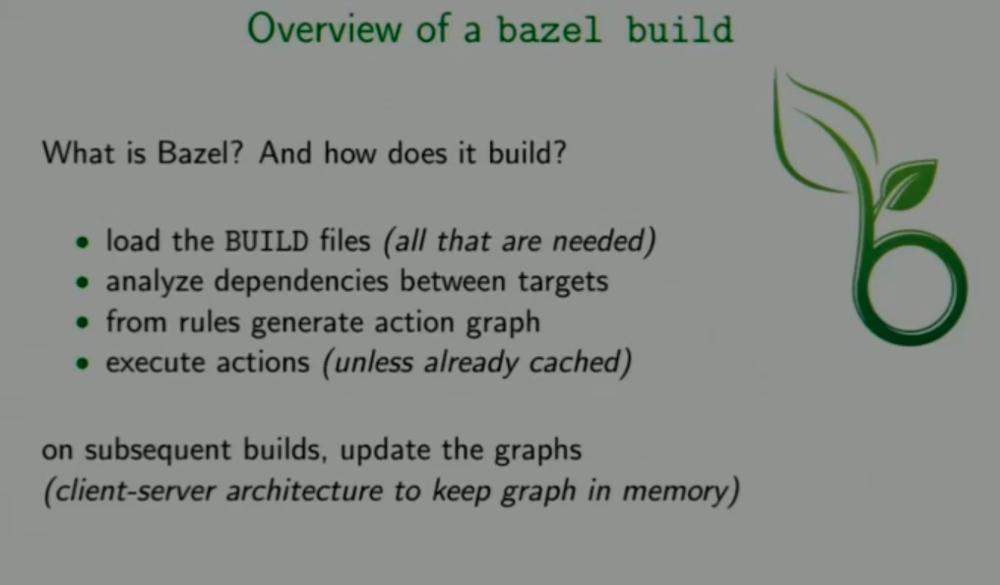
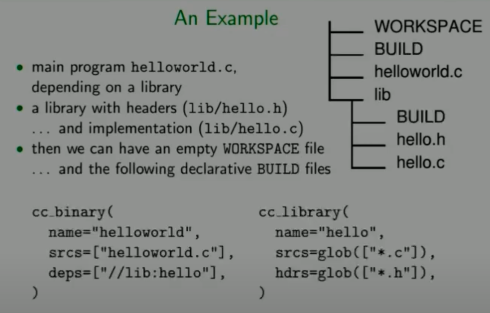
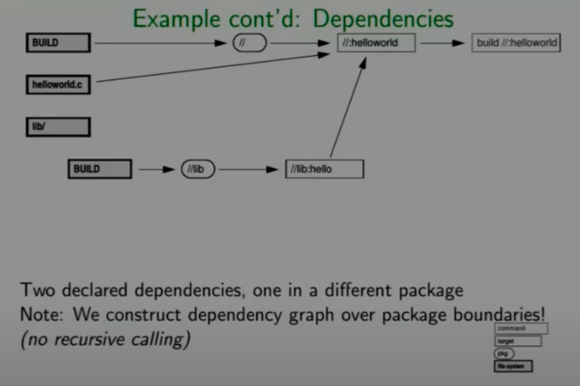
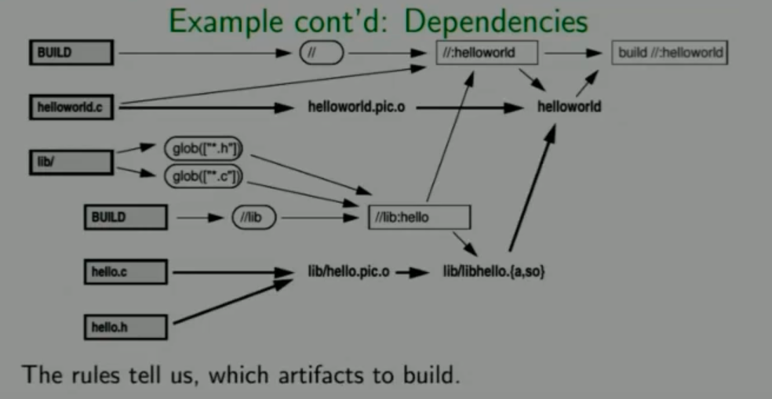
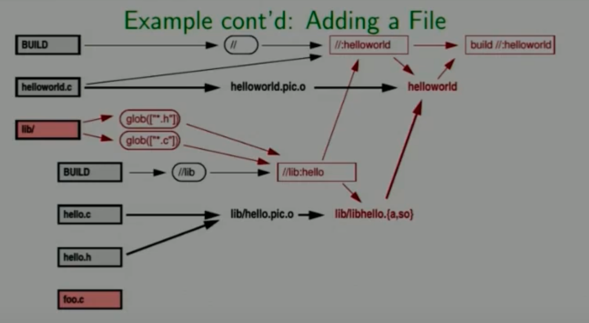
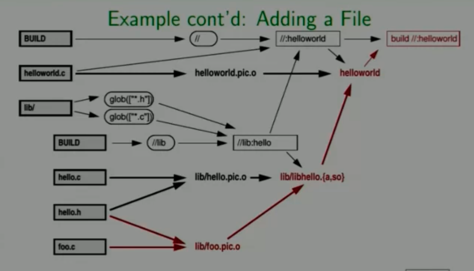
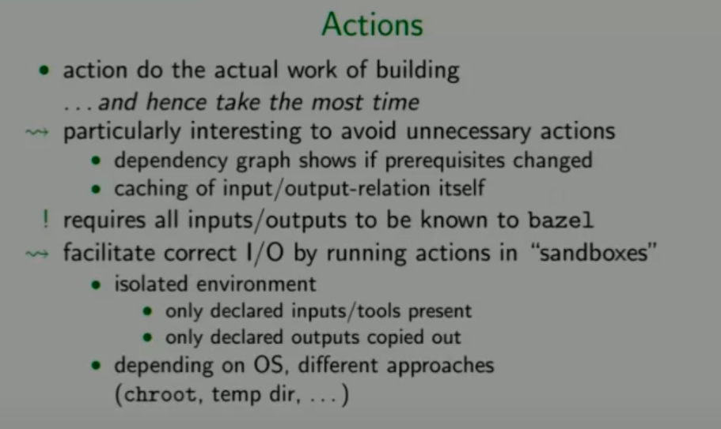
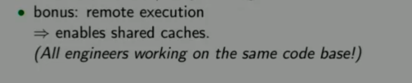

BUILD Bazel入门：编译C++项目
Bazel 是一个由 Google 开发并开源的构建和测试工具，它支持多种编程语言和平台。Bazel 旨在支持大规模的软件构建，同时确保构建的速度和可靠性，特别是对于拥有大量源代码和依赖关系的项目。Bazel 在 Google 内部广泛使用，也是 TensorFlow 等大型开源项目的主要构建工具。
Bazel是一个类似于Make的编译工具，是Google为其内部软件开发的特点量身定制的工具，如今Google使用它来构建内部大多数的软件。Google认为直接用Makefile构建软件速度太慢，结果不可靠，所以构建了一个新的工具叫做Bazel，Bazel的规则层级更高。
Bazel 的主要特点：
性能：
Bazel 优化了增量构建的过程，只重新构建自上次构建以来实际发生变化的部分，这极大提高了构建效率。
可扩展性：
Bazel 能够处理非常大的代码库和复杂的依赖关系，这使得它适用于大型企业级项目。
多语言支持：
Bazel 支持多种编程语言，如 Java、C++、Python 等，甚至可以通过扩展来支持更多语言。
可复现性：
Bazel 构建的结果是可复现的，意味着在任何具有相同输入的环境中重复构建应该得到相同的结果。
沙箱环境：
Bazel 在一个隔离的沙箱环境中执行构建和测试任务，这减少了环境因素对构建过程的影响，增加了构建的可靠性。
工作原理：
Bazel 使用一种名为 BUILD 的构建配置文件来描述软件的源文件和依赖关系。BUILD 文件是一组用 Starlark（一种类似于 Python 的语言）编写的指令，定义了如何构建软件的不同部分。
Bazel 的依赖图确保了构建过程的正确顺序，只有当依赖项成功构建后，依赖于它们的组件才会被构建。
构建输出通常存储在称为 bazel-bin 和 bazel-out 的目录中。
使用场景：
大规模软件开发：适用于具有数百万行代码和复杂依赖关系的项目。
持续集成系统：Bazel 的增量构建特性使其成为持续集成环境中理想的构建工具。
多平台开发：Bazel 支持交叉编译，可以生成针对不同操作系统和硬件平台的可执行文件。
总之，Bazel 是一个高效、可扩展且跨语言的构建系统，适合用于大型软件项目和多种编程语言的环境，它通过有效地管理依赖关系和缓存已构建的工件来优化构建过程。
要使用 Bazel 和 BUILD 文件进行编译，你首先需要确保已经在你的系统上安装了 Bazel。以下是使用 Bazel 进行项目编译的基本步骤：
1. 安装 Bazel
确保你的系统上已经安装了 Bazel。你可以从 Bazel 的官方网站下载合适的安装包：
https://bazel.build/
对于多数操作系统，Bazel 提供了详细的安装指南。
2. 准备 BUILD 文件
在项目的根目录中，你应该有一个或多个名为 BUILD 的文件，这些文件描述了如何构建项目的不同部分。例如，一个简单的 C++ 项目可能有如下的 BUILD 文件：
cc_binary(
name = "hello_world",
srcs = ["hello_world.cc"],
)
这里，cc_binary 规则告诉 Bazel 如何编译和链接一个 C++ 程序。
3. 构建项目
在你的终端中，导航到包含 BUILD 文件的目录。使用以下命令来构建项目：
bazel build //path/to:target
//path/to:target是目标的标签，其中path/to是目标所在的包的路径，target是BUILD文件中定义的目标名称。如果目标在根目录下的BUILD文件中，路径可以省略。
例如，如果你的 BUILD 文件位于项目根目录，并定义了一个名为 hello_world 的目标，你可以运行：
bazel build //:hello_world
这条命令会构建 hello_world 目标。
4. 运行编译好的程序
一旦编译完成，Bazel 会在 bazel-bin 目录下生成输出文件。你可以直接运行这个可执行文件。例如：
./bazel-bin/hello_world
5. 清理构建文件
如果你想清除构建产生的所有中间文件和输出，可以运行：
bazel clean
这将删除所有由 Bazel 创建的构建产物，包括缓存。
其他常用命令
测试：如果你有测试规则，可以使用
bazel test命令来运行这些测试。查看依赖图：
bazel query命令可以帮助你理解目标间的依赖关系。
使用 Bazel 的一个关键好处是，它会缓存之前的构建结果，并且只重新构建自上次构建以来有变化的部分，这可以显著提高开发效率。









